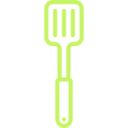

<ion-view view-title="Ingredients" ng-controller="SingleController"><!--creation d'une vue-->
    <ion-content scroll="false"><!-- permet de rendre la  vue non scrollable-->
        <!-- BACKGROUND GAUFRE -->

        <section class="page-ingre page-ingre-sel">

            <div class="bg-ingre ingre ingre-sel">
                <a ng-click="backView()" class="boutonRetour button icon-left ion-chevron-left button-clear button-ligth ion-ios-arrow-thin-left">
                </a>
                <h2 class="text-center">{{single.titre}}</h2>
            </div>

            <div class="row resume">
                <div class="col col-30 col-offset-10">
                    
                    <button type="submit" ng-click="isFav(recette)" class="button-light button-clear ion-ios-heart-outline pull-right" ng-style="Favoris"></button> 

                    <button type="submit" ng-click="delFav(recette)" class="button-light button-clear ion-ios-heart pull-right" ng-style="delFavoris"></button>

                </div>
                <div class="col col-20">
                    <p class="text-resume">{{single.nbPersonne}} pers.</p>
                </div>
                <div class="col col-40">
                    <p class="text-resume">{{single.temps}} min de préparation</p>
                </div>
            </div>

            <div class="content">
                <h3 class="text-center">INGREDIENTS</h3>
                <div class="row">
                    <div class="col-10"></div>
                    <div class="col-80">
                        <ion-item ng-repeat="ingredient in ingredients track by $index" ng-if="ingredient">
                            <div class="row content-detail">
                                
                                <p>{{ingredient}}</p>
                            </div>
                        </ion-item>
                    </div>
                    <div class="col-10"></div>
                </div>
            </div>
            <a ui-sref="sel-etape" class="start"> COMMENCER </a>
            </div>


        </section>
    </ion-content>
</ion-view>